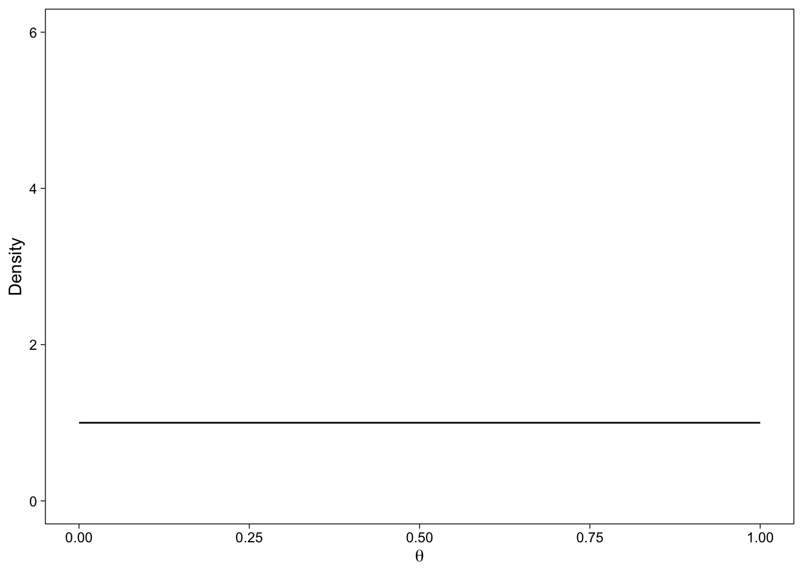
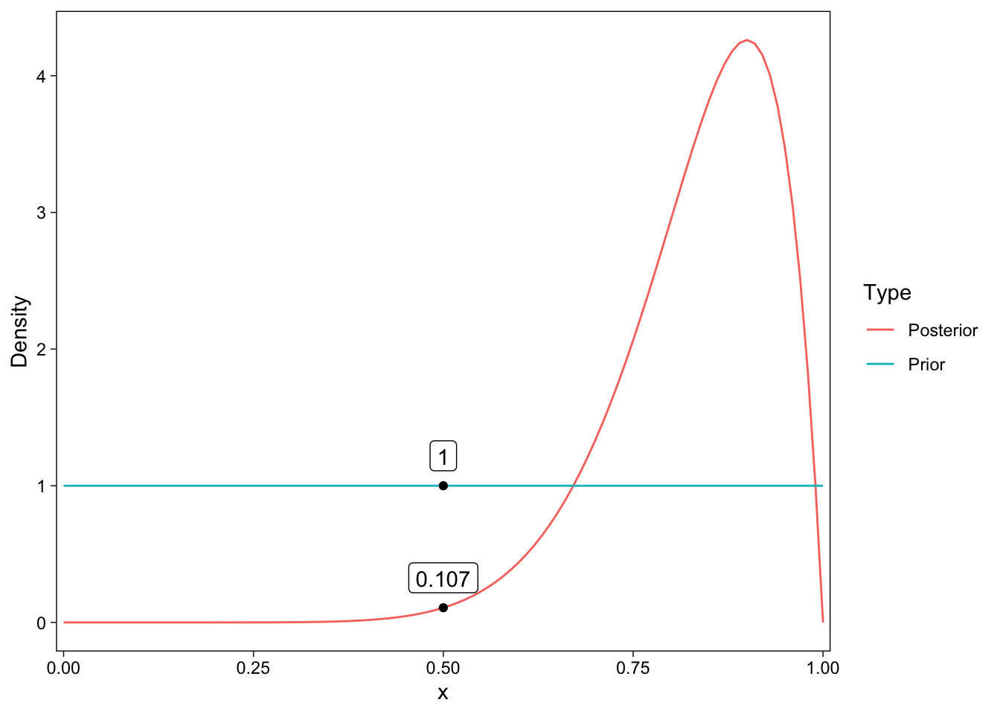
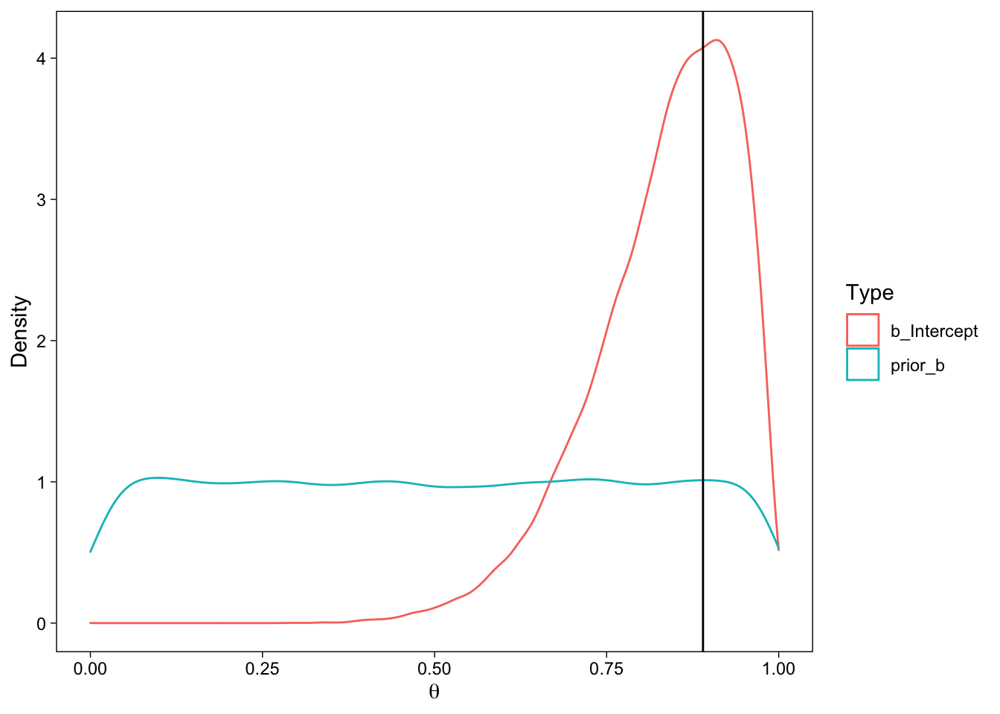
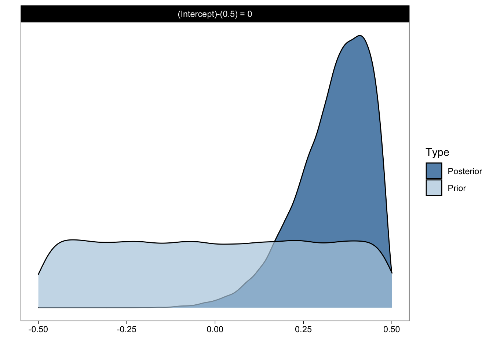
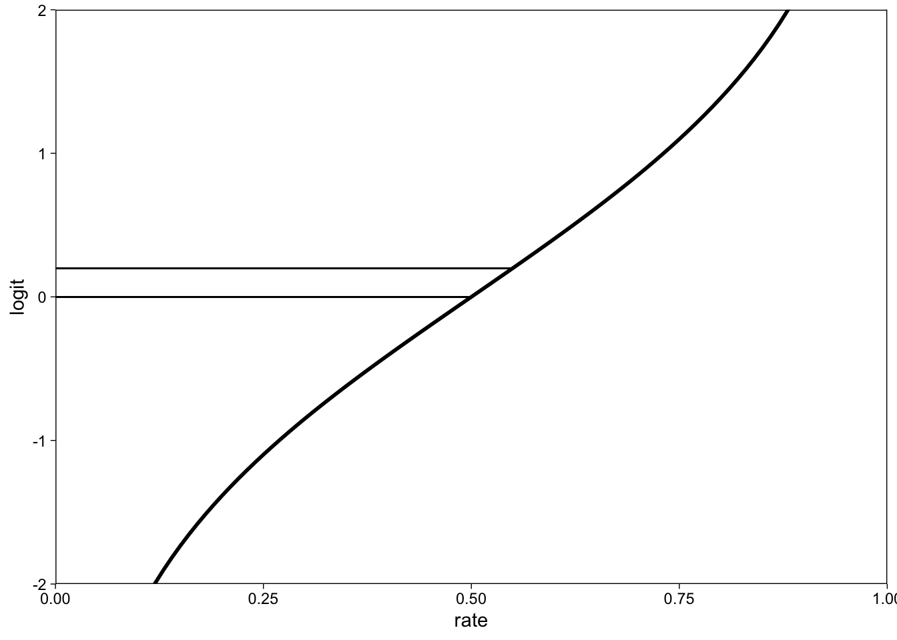
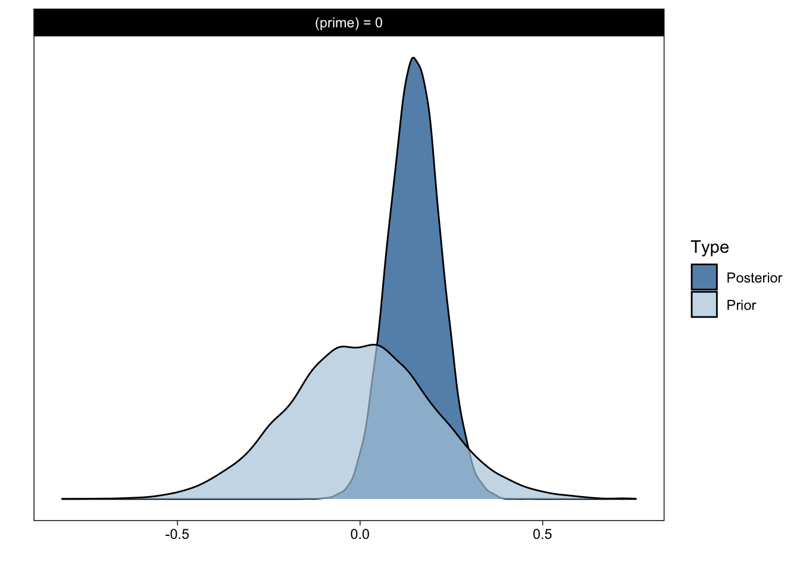

![]()
library(knitr)
library(kableExtra)
library(scales)
library(brms)
library(patchwork)
library(tidyverse)Here’s a short post on how to calculate Bayes Factors with the R package brms using the Savage-Dickey density ratio method (Wagenmakers et al. 2010).
To get up to speed with what the Savage-Dickey density ratio method is–or what Bayes Factors are–please read the target article (Wagenmakers et al. 2010). (The paper is available on the author’s webpage.) Here, I’ll only show the R & brms code to do the calculations discussed in Wagenmakers et al. (2010). In their paper, they used WinBUGS, which requires quite a bit of code to sample from even a relatively simple model. brms on the other hand uses the familiar R formula syntax, making it easy to use. brms also does the MCMC sampling with Stan (Stan Development Team 2016), or rather creates Stan code from a specified R model formula by what can only be described as string processing magic, making the sampling very fast. Let’s get straight to the examples. We will use these packages:
Example 0
Wagenmakers and colleagues begin with a simple example of 10 true/false questions: We observe a person answering 9 (s) out of 10 (k) questions correctly.
d <- data.frame(s = 9, k = 10)We are interested in the person’s latent ability to answer similar questions correctly. This ability is represented by \(\theta\) (theta), which for us will be the probability parameter (sometimes also called the rate parameter) in a binomial distribution. The maximum likelihood (point) estimate for \(\theta\) is the proportion n/k = .9.
The first thing we’ll need to specify with respect to our statistical model is the prior probability distribution for \(\theta\). As in Wagenmakers et al. 2010, we specify a uniform prior, representing no prior information about the person’s ability to aswer the questions. For the binomial probability parameter, \(Beta(\alpha = 1, \beta = 1)\) is a uniform prior.
pd <- tibble(
x = seq(0, 1, by = .01),
Prior = dbeta(x, 1, 1)
)
The solid line represents the probability density assigned to values of \(\theta\) by this prior probability distribution. You can see that it is 1 for all possible parameter values: They are all equally likely a priori. For this simple illustration, we can easily calculate the posterior distribution by adding the number of correct and incorrect answers to the parameters of the prior Beta distribution.
pd$Posterior <- dbeta(pd$x, 9+1, 1+1)
The Savage-Dickey density ratio is calculated by dividing the posterior density by the prior density at a specific parameter value. Here, we are interested in .5, a “null hypothesis” value indicating that the person’s latent ability is .5, i.e. that they are simply guessing.
| x | Prior | Posterior | BF01 | BF10 |
|---|---|---|---|---|
| 0.5 | 1 | 0.107 | 0.107 | 9.309 |
OK, so in this example we are able to get to the posterior with simply adding values into the parameters of the Beta distribution, but let’s now see how to get to this problem using brms. First, here’s the brms formula of the model:
m0 <- bf(
s | trials(k) ~ 0 + Intercept,
family = binomial(link = "identity")
)Read the first line as “s successes from k trials regressed on intercept”. That’s a little clunky, but bear with it. If you are familiar with R’s modeling syntax, you’ll be wondering why we didn’t simply specify ~ 1 (R’s default notation for an intercept). The reason is that brms by default uses a little trick in parameterizing the intercept which speeds up the MCMC sampling. In order to specify a prior for the intercept, you’ll have to take the default intercept out (0 +), and use the reserved string intercept to say that you mean the regular intercept. See ?brmsformula for details. (For this model, with only one parameter, this complication doesn’t matter, but I wanted to introduce it early on so that you’d be aware of it when estimating multi-parameter models.)
The next line specifies that the data model is binomial, and that we want to model it’s parameter through an identity link. Usually when you model proportions or binary data, you’d use a logistic (logistic regression!), probit or other similar link function. In fact this is what we’ll do for later examples. Finally, we’ll use the data frame d.
OK, then we’ll want to specify our priors. Priors are extremo important for Bayes Factors–and probabilistic inference in general. To help set priors, we’ll first call get_priors() with the model information, which is basically like asking brms to tell what are the possible priors, and how to specify then, given this model.
get_prior(m0, data = d)
## prior class coef group resp dpar nlpar lb ub source
## (flat) b default
## (flat) b Intercept (vectorized)The first line says that there is only one class of parameters b, think of class b as “betas” or “regression coefficients”. The second line says that the b class has only one parameter, the intercept. So we can set a prior for the intercept, and this prior can be any probability distribution in Stan language. We’ll create this prior using brms’ set_prior(), give it a text string representing the Beta(1, 1) prior for all parameters of class b (shortcut, could also specify that we want it for the intercept specifically), and then say the upper and lower bounds (\(\theta\) must be between 0 and 1).
Prior <- set_prior("beta(1, 1)", class = "b", lb = 0, ub = 1)Almost there. Now we’ll actually sample from the model using brm(), give it the model, priors, data, ask it to sample from priors (for the density ratio), and set a few extra MCMC parameters.
m <- brm(
formula = m0,
prior = Prior,
data = d,
sample_prior = TRUE,
iter = 1e4,
cores = 4,
file = "bayesfactormodel"
)We can get the estimated parameter by asking the model summary:
summary(m)
## Family: binomial
## Links: mu = identity
## Formula: s | trials(k) ~ 0 + Intercept
## Data: d (Number of observations: 1)
## Draws: 4 chains, each with iter = 10000; warmup = 5000; thin = 1;
## total post-warmup draws = 20000
##
## Population-Level Effects:
## Estimate Est.Error l-95% CI u-95% CI Rhat Bulk_ESS Tail_ESS
## Intercept 0.83 0.10 0.59 0.98 1.00 6331 6217
##
## Draws were sampled using sampling(NUTS). For each parameter, Bulk_ESS
## and Tail_ESS are effective sample size measures, and Rhat is the potential
## scale reduction factor on split chains (at convergence, Rhat = 1).The Credible Interval matches exactly what’s reported in the paper. The point estimate differs slightly because here we see the posterior mean, whereas in the paper, Wagenmakers et al. report the posterior mode. I’ll draw a line at their posterior mode, below, to show that it matches.
samples <- posterior_samples(m, "b")| b_Intercept | prior_b |
|---|---|
| 0.85 | 0.41 |
| 0.68 | 0.23 |
| 0.73 | 0.95 |
| 0.78 | 0.60 |
| 0.78 | 0.25 |
| 0.81 | 0.88 |

We can already see the densities, so all that’s left is to obtain the exact values at the value of interest (.5) and take the \(\frac{posterior}{prior}\) ratio. Instead of doing any of this by hand, we’ll use brms’ function hypothesis() that allows us to test point hypotheses using the Dickey Savage density ratio. For this function we’ll need to specify the point of interest, .5, as the point hypothesis to be tested.
h <- hypothesis(m, "Intercept = 0.5")
print(h, digits = 4)
## Hypothesis Tests for class b:
## Hypothesis Estimate Est.Error CI.Lower CI.Upper Evid.Ratio Post.Prob Star
## 1 (Intercept)-(0.5) = 0 0.335 0.1037 0.0892 0.4781 0.1119 0.1006 *
## ---
## 'CI': 90%-CI for one-sided and 95%-CI for two-sided hypotheses.
## '*': For one-sided hypotheses, the posterior probability exceeds 95%;
## for two-sided hypotheses, the value tested against lies outside the 95%-CI.
## Posterior probabilities of point hypotheses assume equal prior probabilities.The Evid.Ratio is our Bayes Factor BF01. Notice that it matches the value 0.107 pretty well. You can also plot this hypothesis object easily with the plot() method:
plot(h)
OK, so that was a lot of work for such a simple problem, but the real beauty of brms (and Stan) is the scalability: We can easily solve a problem with one row of data and one parameter, and it won’t take much more to solve a problem with tens of thousands of rows of data, and hundreds of parameters. Let’s move on to the next example from Wagenmakers et al. (2010).
Example 1: Equality of Proportions
These are the data from the paper
d <- data.frame(
pledge = c("yes", "no"),
s = c(424, 5416),
n = c(777, 9072)
)
d
## pledge s n
## 1 yes 424 777
## 2 no 5416 9072They use Beta(1, 1) priors for both rate parameters, which we’ll do as well. Notice that usually a regression formula has an intercept and a coefficient (e.g. effect of group.) By taking the intercept out (0 +) we can define two pledger-group proportions instead, and set priors on these. If we used an intercept + effect formula, we could set a prior on the effect itself.
m1 <- bf(
s | trials(n) ~ 0 + pledge,
family = binomial(link = "identity")
)
get_prior(
m1,
data = d
)
## prior class coef group resp dpar nlpar lb ub source
## (flat) b default
## (flat) b pledgeno (vectorized)
## (flat) b pledgeyes (vectorized)We can set the Beta prior for both groups’ rate with one line of code by setting the prior on the b class without specifying the coef.
Prior <- set_prior("beta(1, 1)", class = "b", lb = 0, ub = 1)Like above, let’s estimate.
m1 <- brm(
m1,
prior = Prior,
sample_prior = TRUE,
iter = 1e4,
data = d,
cores = 4,
file = "bayesfactormodel2"
)Our estimates match the MLEs reported in the paper:
summary(m1)
## Family: binomial
## Links: mu = identity
## Formula: s | trials(n) ~ 0 + pledge
## Data: d (Number of observations: 2)
## Draws: 4 chains, each with iter = 10000; warmup = 5000; thin = 1;
## total post-warmup draws = 20000
##
## Population-Level Effects:
## Estimate Est.Error l-95% CI u-95% CI Rhat Bulk_ESS Tail_ESS
## pledgeno 0.60 0.01 0.59 0.61 1.00 17582 12872
## pledgeyes 0.55 0.02 0.51 0.58 1.00 19471 13744
##
## Draws were sampled using sampling(NUTS). For each parameter, Bulk_ESS
## and Tail_ESS are effective sample size measures, and Rhat is the potential
## scale reduction factor on split chains (at convergence, Rhat = 1).To get the density ratio Bayes Factor, we’ll need to specify a text string as our hypothesis. Our hypothesis is that the rate parameters \(\theta_1\) and \(\theta_2\) are not different: \(\theta_1\) = \(\theta_2\). The alternative, then, is the notion that the parameter values differ.
h1 <- hypothesis(m1, "pledgeyes = pledgeno")
h1
## Hypothesis Tests for class b:
## Hypothesis Estimate Est.Error CI.Lower CI.Upper Evid.Ratio Post.Prob Star
## 1 (pledgeyes)-(pled... = 0 -0.05 0.02 -0.09 -0.02 0.55 0.36 *
## ---
## 'CI': 90%-CI for one-sided and 95%-CI for two-sided hypotheses.
## '*': For one-sided hypotheses, the posterior probability exceeds 95%;
## for two-sided hypotheses, the value tested against lies outside the 95%-CI.
## Posterior probabilities of point hypotheses assume equal prior probabilities.As noted in the paper, a difference value of 0 is about twice as well supported before seeing the data, i.e. the null hypothesis of no difference is twice less likely after seeing the data:
1 / h1$hypothesis$Evid.Ratio # BF10
## [1] 1.808643The paper reports BF01 = 0.47, so we’re getting the same results (as we should.) You can also compare this figure to what’s reported in the paper.
h1p1 <- plot(h1, plot = F)[[1]]
h1p2 <- plot(h1, plot = F)[[1]] +
coord_cartesian(xlim = c(-.05, .05), ylim = c(0, 5))
(h1p1 | h1p2) +
plot_layout(guides = "collect")
Moving right on to Example 2, skipping the section on “order restricted analysis”.
Example 2: Hierarchical Bayesian one-sample proportion test
The data for example 2 is not available, but we’ll simulate similar data. The simulation assumes that the neither-primed condition average correct probability is 50%, and that the both-primed condition benefit is 5%. Obviously, the numbers here won’t match anymore, but the data reported in the paper has an average difference in proportions of about 4%.
set.seed(5)
d <- tibble(
id = c(rep(1:74, each = 2)),
primed = rep(c("neither", "both"), times = 74),
prime = rep(c(0, 1), times = 74), # Dummy coded
n = 21,
correct = rbinom(74 * 2, 21, .5 + prime * .05)
)
group_by(d, primed) %>% summarize(p = sum(correct) / sum(n))
## # A tibble: 2 × 2
## primed p
## <chr> <dbl>
## 1 both 0.542
## 2 neither 0.499This data yields a similar t-value as in the paper.
t.test(correct / n ~ primed, paired = T, data = d)
##
## Paired t-test
##
## data: correct/n by primed
## t = 2.3045, df = 73, p-value = 0.02404
## alternative hypothesis: true difference in means is not equal to 0
## 95 percent confidence interval:
## 0.005741069 0.079201016
## sample estimates:
## mean of the differences
## 0.04247104Instead of doing a probit regression, I’m going to do logistic regression. Therefore we define the prior on the log-odds scale. The log odds for the expected probability of .5 is 0. I prefer log-odds because–although complicated–they make sense, unlike standardized effect sizes. Note that the probit scale would also be fine as they are very similar.
Let’s just get a quick intuition about effects in log-odds: The change in log odds from p = .5 to .55 is about 0.2.
tibble(
rate = seq(0, 1, by = .01),
logit = arm::logit(rate)
) %>%
ggplot(aes(rate, logit)) +
geom_line(size = 1) +
geom_segment(x = 0, xend = 0.55, y = .2, yend = .2, size = .4) +
geom_segment(x = 0, xend = 0.5, y = 0, yend = 0, size = .4) +
coord_cartesian(ylim = c(-2, 2), expand = 0)
We are cheating a little because we know these values, having simulated the data. However, log-odds are not straightforward (!), and this knowledge will allow us to specify better priors in this example. Let’s get the possible priors for this model by calling get_prior(). Notice that the model now includes id-varying “random” effects, and we model them from independent Gaussians by specifying || instead of | which would give a multivariate Gaussian on the varying effects.
m2 <- bf(
correct | trials(n) ~ 0 + Intercept + prime +
(0 + Intercept + prime || id),
family = binomial(link = "logit")
)
get_prior(
m2,
data = d
)
## prior class coef group resp dpar nlpar lb ub source
## (flat) b default
## (flat) b Intercept (vectorized)
## (flat) b prime (vectorized)
## student_t(3, 0, 2.5) sd 0 default
## student_t(3, 0, 2.5) sd id 0 (vectorized)
## student_t(3, 0, 2.5) sd Intercept id 0 (vectorized)
## student_t(3, 0, 2.5) sd prime id 0 (vectorized)The leftmost column gives the pre-specified defaults used by brms. Here are the priors we’ll specify. The most important pertains to prime, which is going to be the effect size in log-odds. Our prior for the log odds of the prime effect is going to be a Gaussian distribution centered on 0, with a standard deviation of .2, which is rather diffuse.
Prior <- c(
set_prior("normal(0, 10)", class = "b", coef = "Intercept"),
set_prior("cauchy(0, 10)", class = "sd"),
set_prior("normal(0, .2)", class = "b", coef = "prime")
)Then we estimate the model using the specified priors.
m2 <- brm(
m2,
prior = Prior,
sample_prior = TRUE,
iter = 1e4,
data = d,
cores = 4,
file = "bayesfactormodel3"
)OK, so our results here will be different because we didn’t parameterize the prior on a standardized effect size because a) I don’t like standardized effect sizes, and b) I would have to play around with the Stan code, and this post is about brms. Anyway, here are the estimated parameters:
summary(m2)
## Family: binomial
## Links: mu = logit
## Formula: correct | trials(n) ~ 0 + Intercept + prime + (0 + Intercept + prime || id)
## Data: d (Number of observations: 148)
## Draws: 4 chains, each with iter = 10000; warmup = 5000; thin = 1;
## total post-warmup draws = 20000
##
## Group-Level Effects:
## ~id (Number of levels: 74)
## Estimate Est.Error l-95% CI u-95% CI Rhat Bulk_ESS Tail_ESS
## sd(Intercept) 0.07 0.05 0.00 0.18 1.00 6289 7595
## sd(prime) 0.12 0.08 0.01 0.30 1.00 5325 7048
##
## Population-Level Effects:
## Estimate Est.Error l-95% CI u-95% CI Rhat Bulk_ESS Tail_ESS
## Intercept 0.01 0.05 -0.09 0.11 1.00 15752 13860
## prime 0.15 0.07 0.01 0.29 1.00 14810 14424
##
## Draws were sampled using sampling(NUTS). For each parameter, Bulk_ESS
## and Tail_ESS are effective sample size measures, and Rhat is the potential
## scale reduction factor on split chains (at convergence, Rhat = 1).And our null-hypothesis density ratio:
h2 <- hypothesis(m2, "prime = 0")
h2
## Hypothesis Tests for class b:
## Hypothesis Estimate Est.Error CI.Lower CI.Upper Evid.Ratio Post.Prob Star
## 1 (prime) = 0 0.15 0.07 0.01 0.29 0.31 0.23 *
## ---
## 'CI': 90%-CI for one-sided and 95%-CI for two-sided hypotheses.
## '*': For one-sided hypotheses, the posterior probability exceeds 95%;
## for two-sided hypotheses, the value tested against lies outside the 95%-CI.
## Posterior probabilities of point hypotheses assume equal prior probabilities.Priming effect of zero log-odds is 4 times less likely after seeing the data:
1 / h2$hypothesis$Evid.Ratio
## [1] 3.267158This is best illustrated by plotting the densities:
plot(h2)
Conclusion
Read the paper! Hopefully you’ll be able to use brms’ hypothesis() function to calculate bayes factors when needed.
References
Stan Development Team. 2016. Stan: A c++ Library for Probability and Sampling, Version 2.15.0. http://mc-stan.org/.
Wagenmakers, Eric-Jan, Tom Lodewyckx, Himanshu Kuriyal, and Raoul Grasman. 2010. “Bayesian Hypothesis Testing for Psychologists: A Tutorial on the Savage–Dickey Method.” Cognitive Psychology 60 (3): 158–89. https://doi.org/10.1016/j.cogpsych.2009.12.001.
Reuse
Citation
BibTeX citation:
@online{vuorre2017,
author = {Vuorre, Matti},
title = {Bayes {Factors} with Brms},
date = {2017-03-21},
url = {https://vuorre.netlify.app/posts/2017-03-21-bayes-factors-with-brms},
langid = {en}
}
For attribution, please cite this work as:
Vuorre, Matti. 2017. “Bayes Factors with Brms.” March 21,
2017. https://vuorre.netlify.app/posts/2017-03-21-bayes-factors-with-brms.